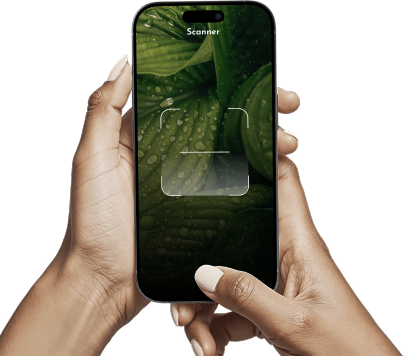

Solutions
Weather & Environment
Unum’s AI models combine satellite data, localized sensors, and climate records to deliver precise weather intelligence for every field. Plan planting windows, adjust irrigation, and protect crops from unexpected conditions.
Learn how Unum's weather insights can help you plan for any condition.
Discover how Unum's real-time weather data and forecasting tools can help you optimize planting, irrigation, and harvesting schedules.Monitor soil temperature
Analyze long-term trends
Improved yield quality
Reduced water usage
Data-driven insights
Better resource allocation

Unum helps farmers make data-driven decisions that improve yields and reduce environmental impact.
Conventional agriculture
Healthy soils
Adoption rate
17%
63%
Regenerative agriculture
Healthy soils
Adoption rate
Potential gain
80%
15%
+45% Yield
Most impactful practice: Relying on real
Intuition → Data